福島に旅行してみた(2018年12月24日)
こんにちは。
コンちゃんこと佐々木です。
行き：土浦8:10→常磐線(上野東京ライン)でひたすら北上3.5h、竜田駅11:30→(代行バス)→富岡駅
— コンちゃん@2日目ト-60a (@conchan_akita) 2017年9月14日
帰り：決めていない 泊まるかどうかも決めていない！
茨城県つくば市に住んでいたときに、(偶然)近くに住んでいた友達がいつの間にか福島長期出張で引っ越してしまったので、おっしゃ福島旅行や！と。
福島広いので、今回の行き先は友達の勤務先あたりに限定することにしましょう。
2017年9月に行ったんだけど、当時ブログがなかったので今になって旅行記を書きます。
（初めに言っておくと、この旅行は綿密に計画の上実行しています）
福島行くぞ！！ pic.twitter.com/3yq9D7JkX9
— コンちゃん@2日目ト-60a (@conchan_akita) 2017年9月15日
行くぞ福島！
(上のツイートだと切符画像見えないやん！お手数ですが画像クリック/タップしてね...)
宿を予約していないし帰りのバスは予約だけしてまだチケット発券していないという、行ってから考えるスタイル。
— コンちゃん@2日目ト-60a (@conchan_akita) 2017年9月15日
（目的地への行きかたに関しては綿密に計画の上実行しています）
水戸駅で乗り換えっ pic.twitter.com/uQhnnFwXbk
— コンちゃん@2日目ト-60a (@conchan_akita) 2017年9月16日
乗り換え。
いわきを出ましたが、1車両に10人もいないなぁ…
— コンちゃん@2日目ト-60a (@conchan_akita) 2017年9月16日
やがて1車両に1人とかそのレベルに。
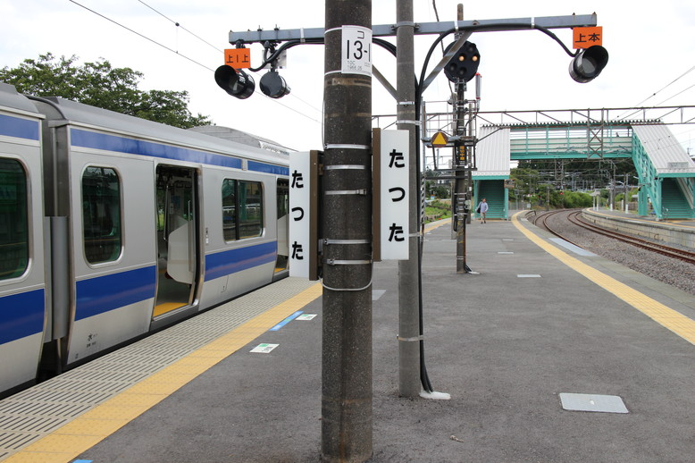
終点駅、竜田駅に着きました。
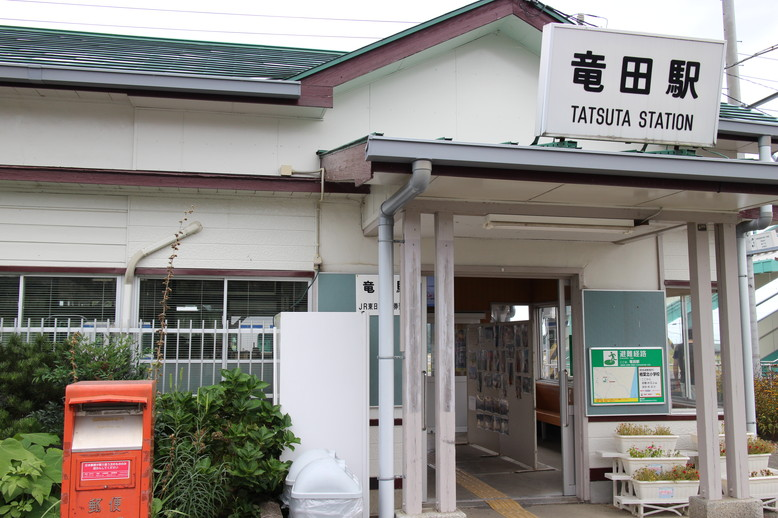
駅舎。
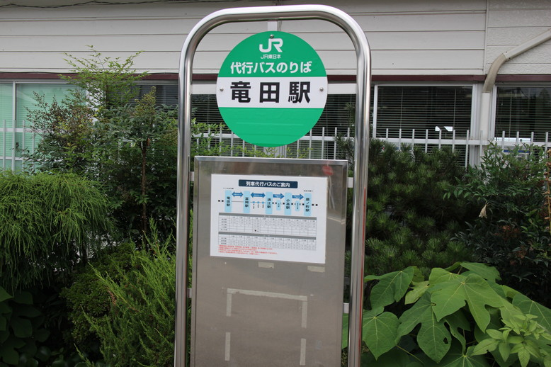
ここからは代行バスです。
富岡駅までの代行バスに乗りました。自分とドライバーさんしか乗っていない。 pic.twitter.com/zv5NwIkJG8
— コンちゃん@2日目ト-60a (@conchan_akita) 2017年9月16日
もうお分かりかと思いますが、友達の勤務先は被災地です。
しかも某発電所近辺なので、立ち入り制限(帰還困難区域)があります。
もちろん立ち入れませんが、近くまで行ってお金を落とそう！！！！
...という旅行です。
着きました！ pic.twitter.com/hhgQ44vN9B
— コンちゃん@2日目ト-60a (@conchan_akita) 2017年9月16日
富岡に着きました。
ここが目的地です。
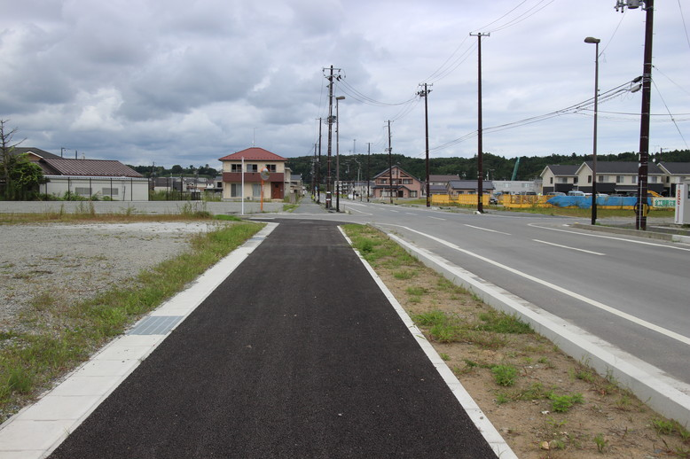
新しい建物・道路が目立ちます。
このあたり全部やられたのでしょう。
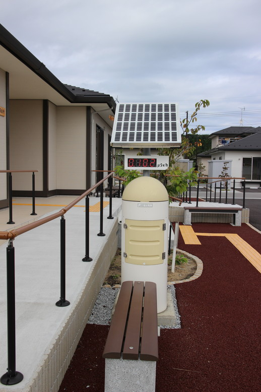
集会所っぽいところに線量計。
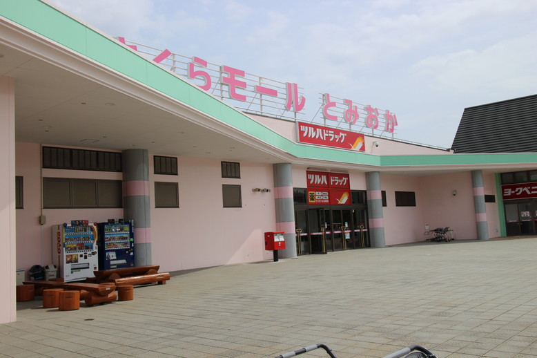
さくらモールとみおか。
この町で食料品が買える数少ない場所だと思う。
https://t.co/JOvB2wps77
— コンちゃん@2日目ト-60a (@conchan_akita) 2017年9月16日
ラーメン食べるよ！
お昼なのでフードコートでご飯。
テーブルがいくつかあったのですが、ほとんど作業員っぽい服装の方で埋まっていました。
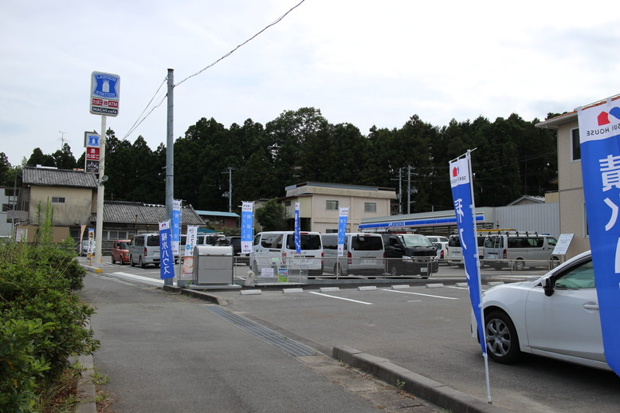
ローソン。
帰りのバスチケットをコンビニで発券したぞ！
— コンちゃん@2日目ト-60a (@conchan_akita) 2017年9月16日
予約済みだったけど発券はしていなかったので。
帰りはバスにしました。
さて、ここからは、Pokemon GOを起動しながら「夜の森」ってところまで散歩します。
常磐線、富岡駅より1つ北が夜ノ森駅なので、1駅分。
地図貼っておきますね。
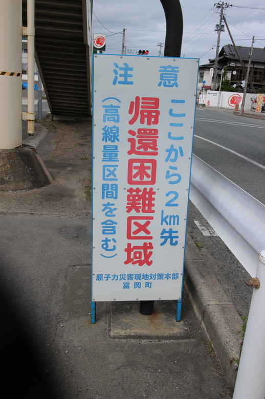
こんな看板がある。
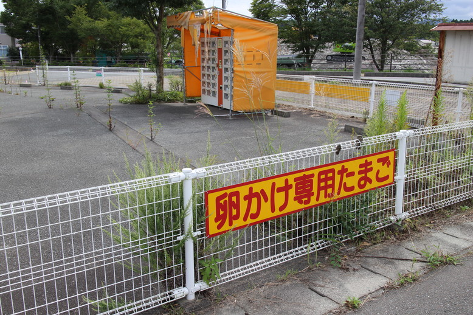
卵かけ専用たまご。
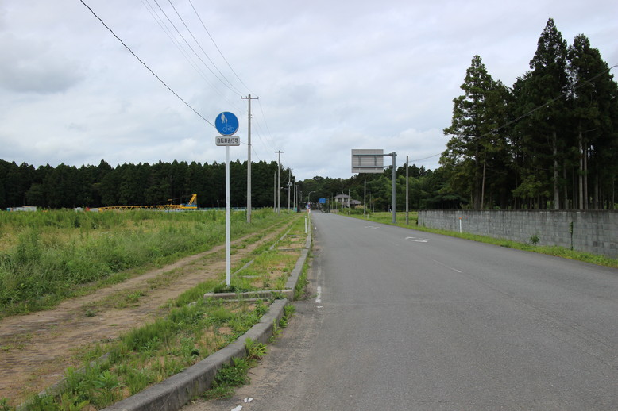
人影はほぼなし。
富岡の市街地あたりはポツポツと歩いていたり庭の手入れしている人もいたけど、道中はホントに人に会わない。
ヤマト運輸のトラックが通ってたので、人は住んでいるっぽい。
ゴミ捨て場にゴミ出てたし。
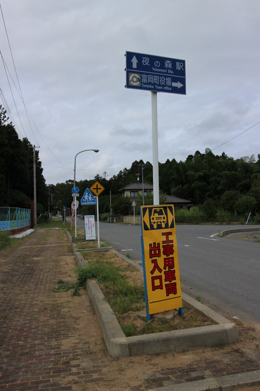
そろそろ到着か？
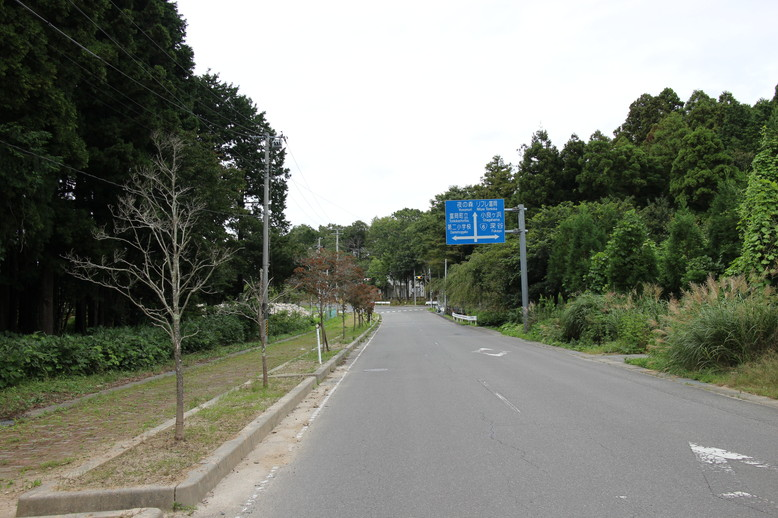
看板を見るに、この道で良さそう。
ホントは国道通るつもりだっけど、「この先関係者以外禁止」的な空気を感じたので、GPS頼みで迂回していました。
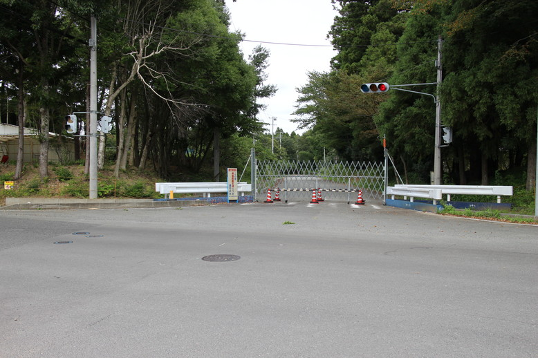
さっきの写真の奥に見える信号のとこだけど、右は完全に立ち入り禁止。
監視カメラもありました。
すぐ横 pic.twitter.com/45KwT8cnx9
— コンちゃん@2日目ト-60a (@conchan_akita) 2017年9月16日
帰還困難区域を右手に見ながら進みます。
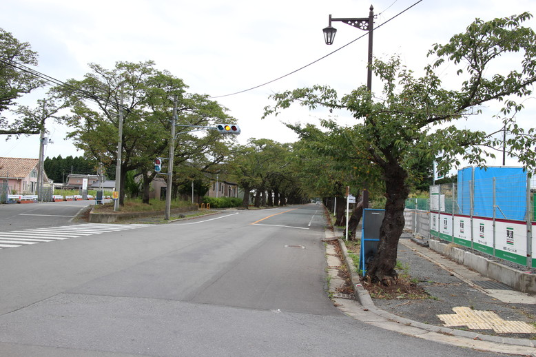
おーっ、ここや！！
着いた！
ちなみに写真左側の道から来ました。
後ろ振り向くと...
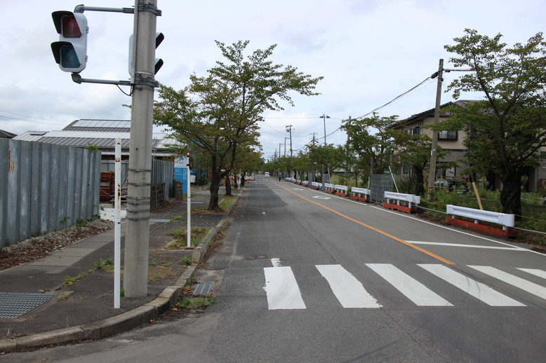
分かりにくいと思いますが、道路が封鎖されていて、監視員が立っています。
つまりこれ以上北上できません。
並木道を通って戻ります。
夜ノ森の桜並木、たぶん。 pic.twitter.com/pUA1DOESMk
— コンちゃん@2日目ト-60a (@conchan_akita) 2017年9月16日
ここは、夜の森の桜並木、これを見に来ました。
じゃらんのページとか見ると桜が咲いています。
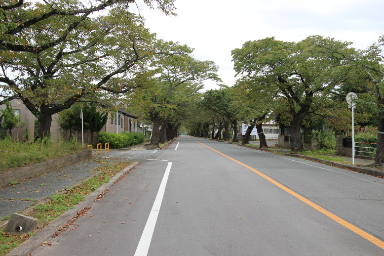
一眼で撮ってみる。
富岡第二中。写真中央あたりにあるのは線量計のようだ。 pic.twitter.com/6m0AFWCt0T
— コンちゃん@2日目ト-60a (@conchan_akita) 2017年9月16日
ここには富岡第二中があります。
ニュースとかでよく名前聞いたような。
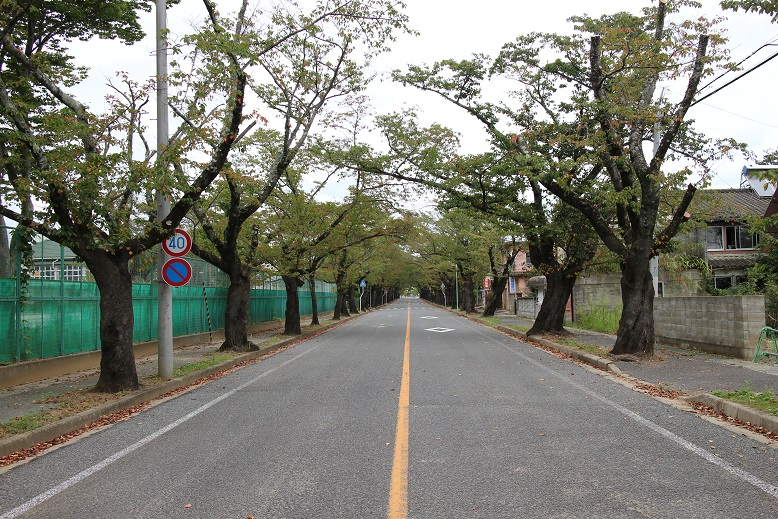
富岡第二中の横で。
ところで夜ノ森といったら未確認で進行形ですね！！
— コンちゃん@2日目ト-60a (@conchan_akita) 2017年9月16日
作者が確か福島出身かな？
たぶん夜の森からキャラの名前取ったんじゃないのかな。
アニメ2期待ち。
この後無事富岡に帰ってきました。
帰りのバスまで近辺を散歩します。
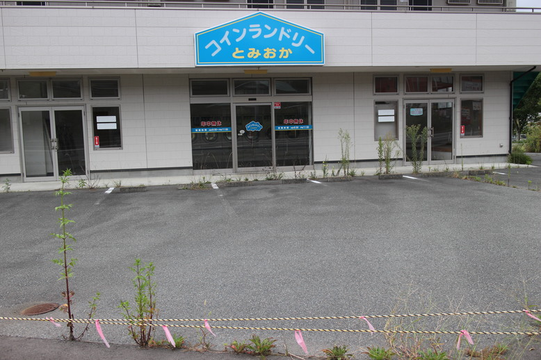
営業していないコインランドリー。
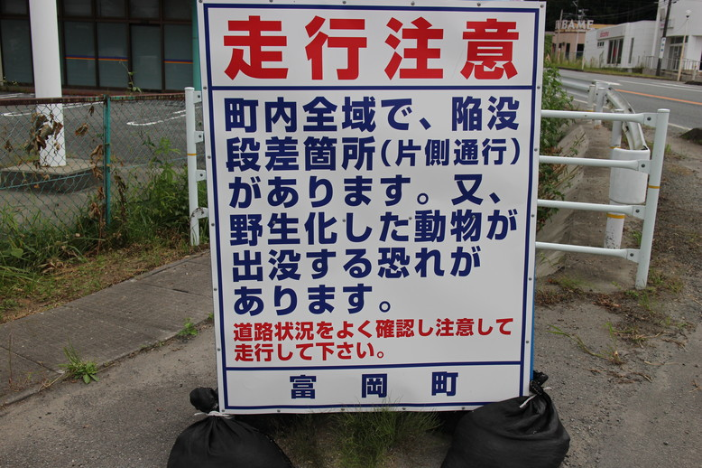
ひえーっ。
幸いにも野生動物には遭遇しなかったけども。
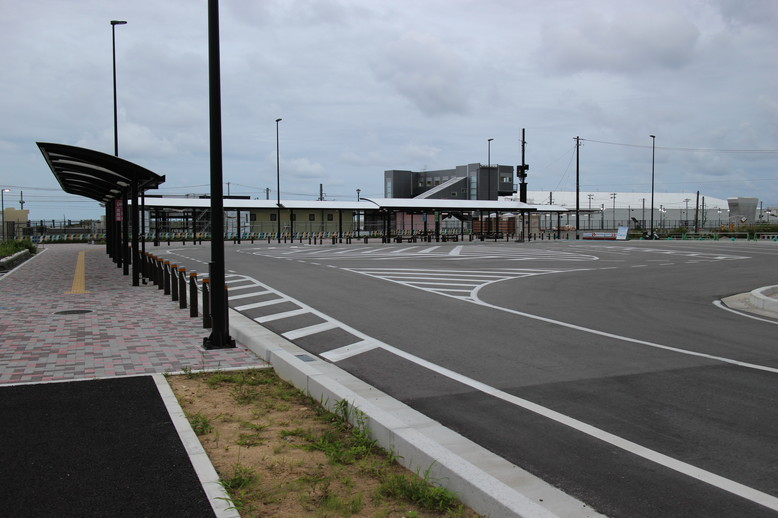
富岡駅まで戻ってきた。
竜田駅まで戻ります。
ちなみに最終バスに乗ったんですが、ここで乗車したのは2人、あとバス車内は窓側席がちょうど全部埋まるくらいの人でした。
作業員っぽい人が多いけど普通に住んでいてお出かけするっぽい人も。
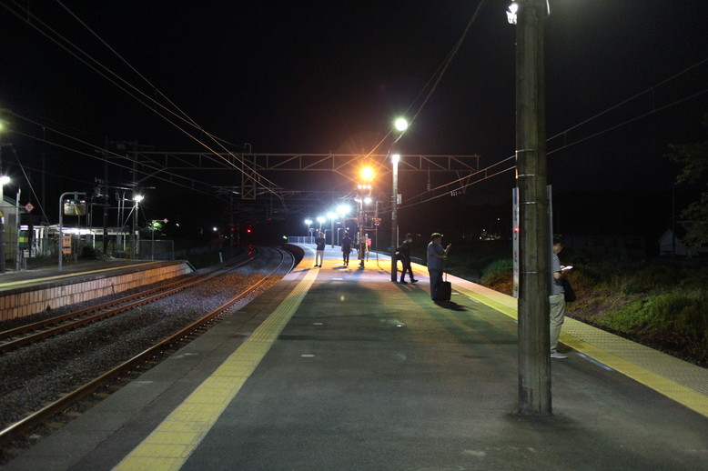
竜田駅。
案外乗る人いるねー。
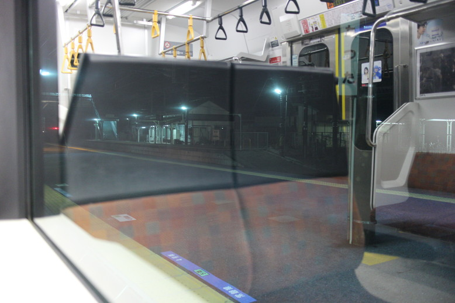
無事乗車、さらば。
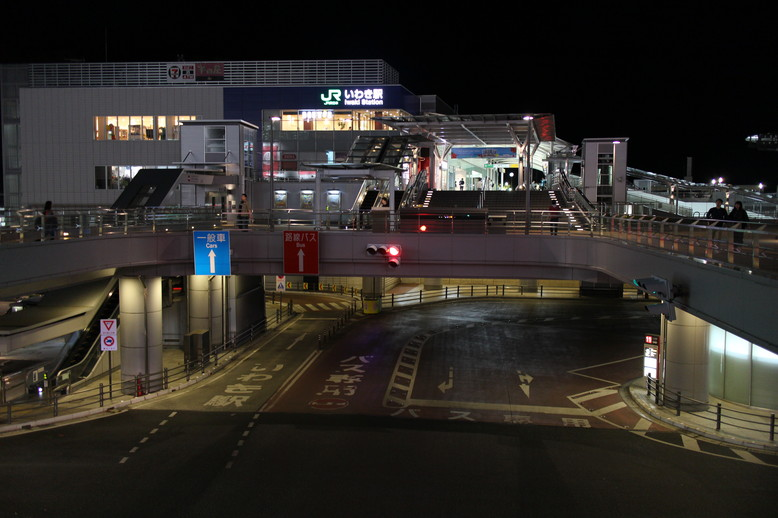
いわき駅。
宿とか特にとってなかったので、湯本駅ってところで温泉入って、いわき駅に戻ってネカフェへ。
ご飯は道中の幸楽苑。
ネカフェまで15分？20分？くらいの距離があって、Pokemon GOでほぼほぼバッテリー使っちゃったのであやうく遭難でした。
なんとかGPS頼みで到着。
次の日。
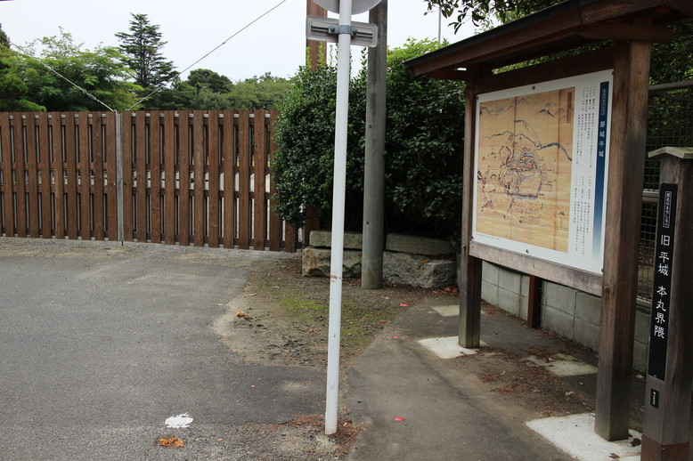
友達が車で迎えに来てくれるそうなので、それまで小雨の中散歩。
このあと合流して、海鮮を食べに行きました。
なんと、写真がないです。。。
パフェ食べた！！ pic.twitter.com/s8oTSFpW7m
— コンちゃん@2日目ト-60a (@conchan_akita) 2017年9月17日
その後に男2人で入ったカフェで食べたパフェの写真はありました。
こんなパフェとか初めて食べたかも。
帰りの高速バス、予約時より人数少なかったなー
— コンちゃん@2日目ト-60a (@conchan_akita) 2017年9月17日
そんなこんなで福島旅は終了。
工事現場は基本的に週6なので友達もそうっぽくて、休め！！って言ってきました。
まぁ、生きていたので何より。